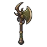
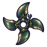
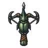

บ่อน้ำร้อนดึกดำบรรพ์
ดูบนแผนที่และวิธีไป วางแผนฟาร์ม
ชั้นล่างในที่ราบสูง · Lv 72–92
เดินต่อไป
มอนในแมพ (7)
| มอน | Lv | ในแมพ | ธาตุ | โซน |
|---|---|---|---|---|
| 72–92 | ≈45 | ไฟ | ลานหินปูนขั้นบันได | |
| 74–92 | ≈23 | ดิน | ลานหินปูนขั้นบันได | |
| 72–92 | ≈21 | ดิน | ลานหินปูนขั้นบันได | |
| 72–84 | ≈17 | ดิน | ||
| 74–92 | ≈13 | ดิน | ลานหินปูนขั้นบันได | |
| 74–92 | ≈2 | ไฟ | ||
| 99–99 | 1 | ดิน |
≈ จำนวนที่อยู่ในแมพพร้อมกันโดยเฉลี่ย คิดจากไฟล์เกม (จุดเกิดของแมพ × 4 แบ่งตามสัดส่วนของแต่ละตัว) ตายแล้วเกิดใหม่ที่เดิมใน 22 วินาที · ตอนเล่นออนไลน์เซิร์ฟเวอร์เป็นคนเกิดมอน อาจไม่ตรง
อุปกรณ์ที่ดรอปในแมพนี้
| ของ | โอกาสสูงสุด |
|---|---|
| 0.5% | |
| 0.25% | |
 ขวานยักษ์ด้วงแรด | 0.25% |
 ดาวยักษ์ปีกแข็งด้วงแรด | 0.25% |
| 0.25% | |
| 0.25% | |
| 0.25% | |
 หน้าไม้ด้วงแรด | 0.25% |
| 0.25% | |
| 0.25% | |
| 0.25% | |
| 0.25% | |
| 0.25% | |
| 0.25% | |
| 0.25% |